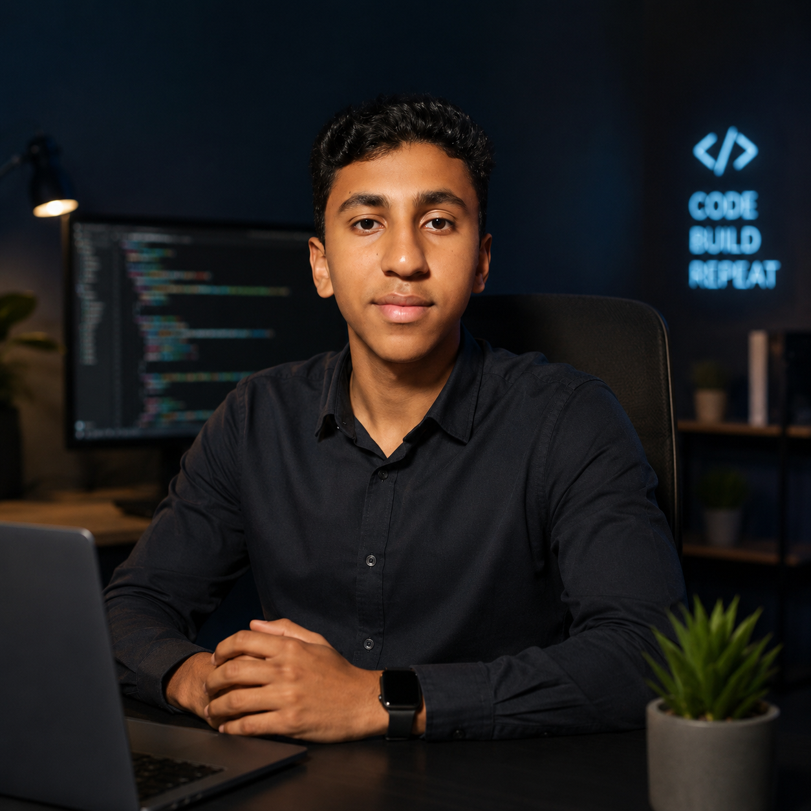

Detail-oriented 16-year-old high school student with hands-on experience in Python for data analysis and visualization. Passionate about transforming raw data into actionable business insights.

I am a High School Student balancing my secondary education with a deep dive into the world of Data Analytics. My journey revolves around building technical skills to bridge the gap between raw, messy datasets and data-driven decision making.
I specialize in using Python and its powerful data science libraries to clean, analyze, and extract narratives from data. Whether it's dissecting sales performance, predicting customer retention trends, or analyzing market pricing dynamics, I enjoy creating impact through clear visual and statistical evidence.
Inspecting complex datasets to identify trends, outliers, and underlying correlation patterns using Python scripts.
Handling missing values, sorting data abnormalities, and formatting raw tables using automated Pandas pipelines.
Crafting concise visual distributions and comparisons using Matplotlib and Seaborn to communicate insights effectively.
To gain practical experience in Data Analysis through internships or entry-level opportunities, and continue improving my skills in data-driven decision making.
I am looking to connect for entry-level data internship positions, collaborative projects, or freelance opportunities.